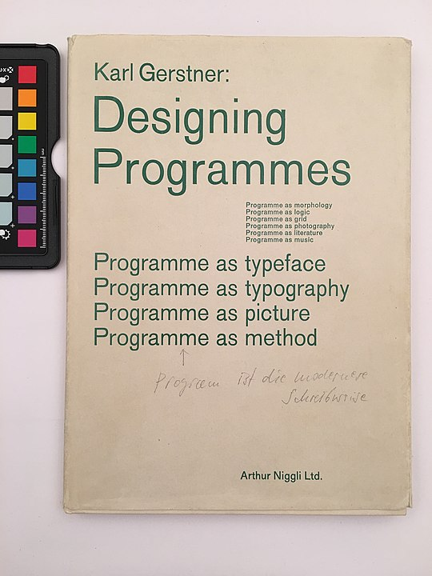
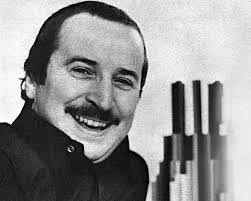
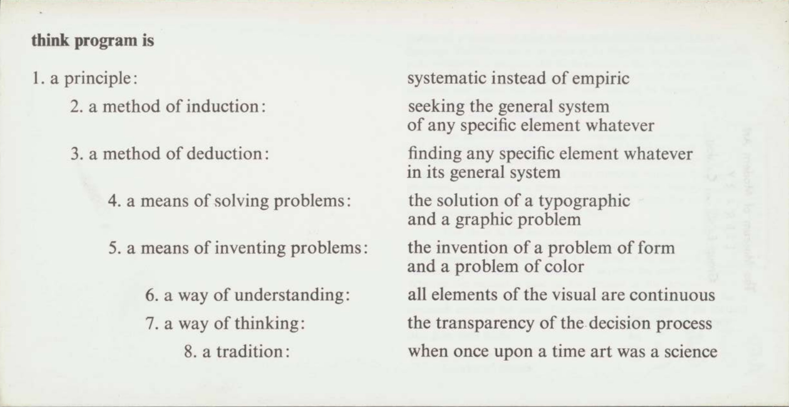
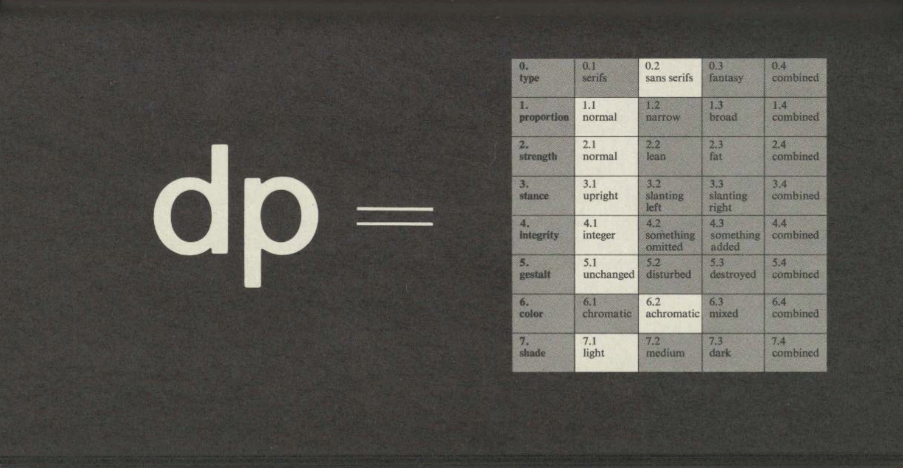
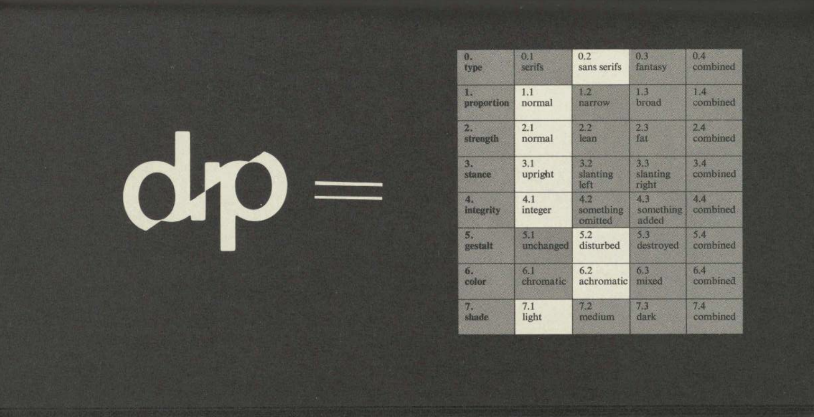
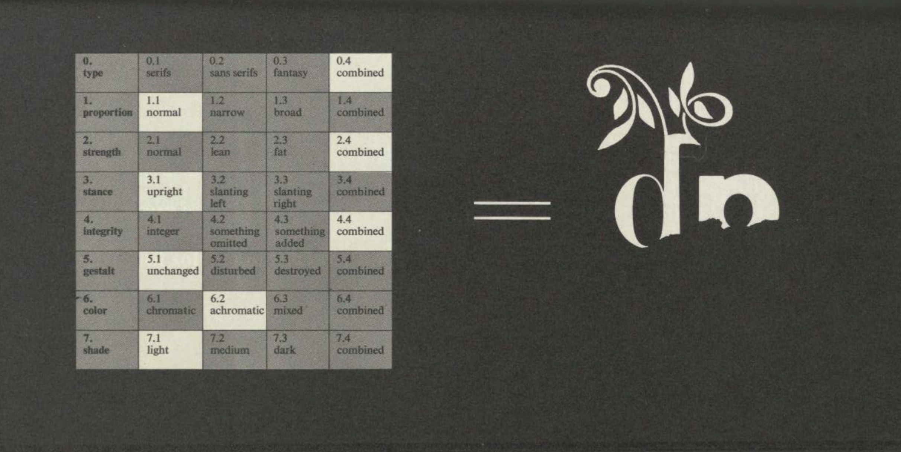

directed by Emilio Ambasz | Museum of Modern Art, New York | Feb 5 - Mar 30 | 1973
Karl Gerster?
Karl Gerstner (1930–2017) was a Swiss designer, typographer, author, and artist. He was a leading representative of Swiss typography and one of the most important innovators of typography, advertising graphics and corporate design.


Think Program?
Subject:
The exhibition’s title means “inventing rules for arrangement” and is a didactic presentation of a mode of observing and creating systematically upon visual reality. It documents Karl Gerstner's design methodology: using a rule set or system defined by the designer that would determine all aesthetic decisions for a given product.
Observation:
I think this publication ties closely with what we’ve learned in this class: presenting designs through computing. In the current world, powerful computer systems include so many elements that are already grouped in a way that allows us to navigate our choices easily. We have been using this system through digital designing; our design experience is made easier by programs like Adobe. It’s fascinating how Gerstner was able to find commonalities in problems and derive a universal way of creating a set of rules that give solutions to different problems despite the time period he was in.
Lesson:
• Breaking down design problems into different elements
• How to find solutions effectively through a set of rules instead of trial-and-error
Questions:
How would you describe the process of coding as a system?
Does anyone have their own set of rules or courses when designing?
Connection:
I think this method of solving problems can be used in our typography class.
- Choosing a typeface - Deciding the style and weight - Grid system
The exhibition’s title means “inventing rules for arrangement” and is a didactic presentation of a mode of observing and creating systematically upon visual reality. It documents Karl Gerstner's design methodology: using a rule set or system defined by the designer that would determine all aesthetic decisions for a given product.
Context:
Gerstner defines design as picking out determining elements and combining them. Much of his design theory hinges on the designer’s ability to make informed choices based on understanding of the problem and the combinations of elements. To come to a problem’s solution, the designer must be able to describe and understand the problem. By then developing a set of intellectual criteria, the designer is able to make ‘creative decisions’ which are based on a systematic approach instead of instinct.




Observation:
I think this publication ties closely with what we’ve learned in this class: presenting designs through computing. In the current world, powerful computer systems include so many elements that are already grouped in a way that allows us to navigate our choices easily. We have been using this system through digital designing; our design experience is made easier by programs like Adobe. It’s fascinating how Gerstner was able to find commonalities in problems and derive a universal way of creating a set of rules that give solutions to different problems despite the time period he was in.
Lesson:
• Breaking down design problems into different elements
• How to find solutions effectively through a set of rules instead of trial-and-error
Questions:
How would you describe the process of coding as a system?
Does anyone have their own set of rules or courses when designing?
Connection:
I think this method of solving problems can be used in our typography class.
- Choosing a typeface - Deciding the style and weight - Grid system